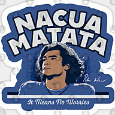
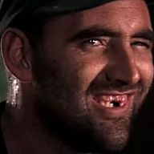
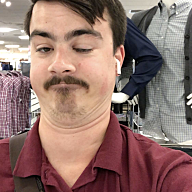
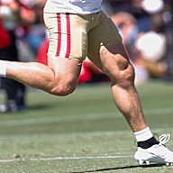

Ten drafts, 19 keepers, one board. Every pick is graded against League ADP — where a player should go once every kept player is off the board and every keeper slot is accounted for — so nobody gets credit or blame for math they didn't choose. Click any team for the full recap: keepers, pick-by-pick verdicts, roster heat, team reliance, and the verdict.
Post-Draft Power Rankings

Nacua MatataPrice · Pick 2 Best QB room and second-best TE room, built on the second-worst RB group in the league. A-Roster Grade 4 Piccolos CageJohn · Pick 5 The most balanced roster in the league, but no strong positional dominance. B+Roster Grade 5
Herbert Fully LoadedBen · Pick 9 Second-best WR room in the league, paired with the only negative QB value and a bottom-two TE room. B+Roster Grade 6 Wraith's VoidwalkersUzoma · Pick 10 Top-three at both QB and WR, offset by below-average RB and TE rooms. BRoster Grade 7 Big Diggs and My ChubbRay · Pick 8 Top-two RB room and a top-three TE room, with receivers the only group below league average. BRoster Grade 8
Breece's PiecesCass · Pick 7 Top-two QB and top-four WR rooms, with the worst RB room in the league by a wide margin. C+Roster Grade 9 Pewter City GymDave · Pick 6 The best TE room in the league and a mid-tier backfield, held back by the second-worst WR room. C+Roster Grade 10
Live By McCaff Die By Muh CalfHarper · Pick 4 A top-four RB room and nothing else above league average, including the worst TE room. C+Roster GradeThe grade is the roster you walked away with — your starting lineup's projected value, weighted toward the top of it, because studs win weeks and depth doesn't. The keeper and draft marks (K · D) aren't averaged in: they're the story of how the roster got built. Ties broken by that same lineup value.
League Superlatives
Best Value Rd 1–5
+17
Garrett Wilson · John (Rd 5)
Best Value Rd 6–10
+42
Baker Mayfield · Colin (Rd 10)
Best Single Keeper Value
+105
Brock Bowers · Dave (Rd 13)
Worst Single Keeper Value
−24
Breece Hall · Cass (Rd 2)
Top QB Point Share
+5.6
Price · points over replacement
Top RB Point Share
+23.1
TK · points over replacement
Top WR Point Share
+19.7
Colin · points over replacement
Top TE Point Share
+6.3
Dave · points over replacement
Positional Value
| Manager | Team | QB | RB | WR | TE | Total |
|---|---|---|---|---|---|---|
| John | Piccolos Cage | 4.6 | 14.2 | 13.9 | 2.8 | 35.5 |
| Ray | Big Diggs and My Chubb | 2.6 | 16.1 | 12.1 | 4.7 | 35.5 |
| Uzoma | Wraith's Voidwalkers | 5.3 | 9.8 | 17.5 | 2.0 | 34.6 |
| TK | Gibbs Me Da Gold | 1.8 | 23.1 | 5.5 | 2.7 | 33.1 |
| Colin | Eat the W | 1.9 | 6.0 | 19.7 | 4.0 | 31.6 |
| Dave | Pewter City Gym | 2.3 | 12.3 | 7.3 | 6.3 | 28.2 |
| Ben | Herbert Fully Loaded | −0.7 | 8.3 | 18.8 | 1.6 | 28.0 |
| Price | Nacua Matata | 5.6 | 5.8 | 11.5 | 5.0 | 27.9 |
| Harper | Live By McCaff Die By Muh Calf | 1.0 | 12.9 | 10.7 | 1.4 | 26.0 |
| Cass | Breece's Pieces | 5.5 | 2.7 | 14.0 | 1.7 | 23.9 |
| League avg | 3.0 | 11.1 | 13.1 | 3.2 | 30.4 |
Projected value above replacement per position, summed across each roster — where every team's strength actually sits. Click any column to sort. Shaded cells are the league's top three (blue) and bottom three (gray) at that position; red is a net negative. Kickers and defenses carry no modelled value and are excluded.